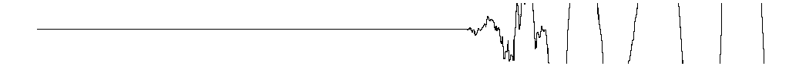

transientlab
2021
instalacje i systemy elektryczne
2021
instalacja systemu nagłośnienia
dla 11bit studios
2020
pomiary samochodowych systemów audio
dla BimmerTech
2020
nagrania, kompozycja i produkcja słuchowiska dźwiękowego
dla Magdaleny Kreis
2020
prototyp stacji pogodowej WiFi na układzie ESP8266
2019
technika dźwięku i realizacja koncertów eksperymentalnych
dla Biennale Sztuki Nowych Mediów WRO
2019
instalacja dzieł sztuki i systemów multimedialnych
dla Keep Away From Fire
2019
warsztaty na temat lutowania
dla Warsztatów Kultury w Lublinie
2019
warsztaty na temat analogowej syntezy dźwięku
dla Canti Spazzialitati
2018
konfiguracja i strojenie systemów nagłośnieniowych
dla WiseDesign
2018
wykonanie instalacji multimedialnej Voice Theatre
dla Antimodular Research
2018
analizy akustyczne
dla major architekci
2018
inwentaryzacja sieci elektrycznej w budynku użytkowym,
dla Tomas de Loo
2018
dwunastokanałowy głośnik dookólny
2018
dwunastokanałowy wzmacniacz
2016
instalacje, konfiguracje i strojenie systemów audio
dla ProAudio-AVT